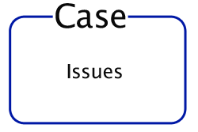

Both people inside and outside of the organization can create a new case. Every time a new case is created, an issue is created inside of the case.
Each time there is a separate instance of the same problem, it can be recorded as a separate issue inside of the same case. Think of issues as communications and cases as actions.
The main search function of uReport searches for cases, not issues. The search results will display cases. When you are looking at a location or a person, you see a list of cases associated with it.